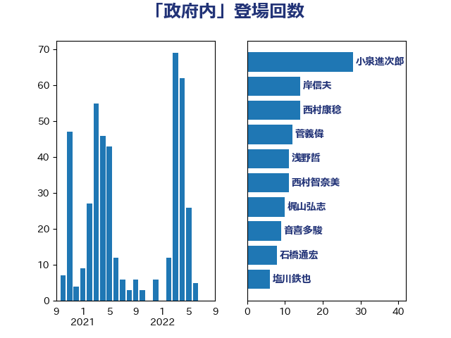

単語「政府内」

| 小泉進次郎 | 自由民主党 | 28 回 |
| 岸信夫 | 自由民主党 | 14 回 |
| 西村康稔 | 自由民主党 | 14 回 |
| 菅義偉 | 自由民主党 | 12 回 |
| 浅野哲 | 国民民主党 | 11 回 |
| 西村智奈美 | 立憲民主党 | 11 回 |
| 梶山弘志 | 自由民主党 | 10 回 |
| 音喜多駿 | 日本維新の会 | 9 回 |
| 石橋通宏 | 立憲民主党 | 8 回 |
| 塩川鉄也 | 日本共産党 | 6 回 |
| 岸田文雄 | 自由民主党 | 6 回 |
| 柴田巧 | 日本維新の会 | 6 回 |
| 萩生田光一 | 自由民主党 | 6 回 |
| 野田聖子 | 自由民主党 | 6 回 |
| 城井崇 | 立憲民主党 | 5 回 |
| 小林鷹之 | 自由民主党 | 5 回 |
| 林芳正 | 自由民主党 | 5 回 |
| 柚木道義 | 立憲民主党 | 5 回 |
| 伊藤孝恵 | 国民民主党 | 4 回 |
| 田島麻衣子 | 立憲民主党 | 4 回 |
| 鈴木貴子 | 自由民主党 | 4 回 |
| 階猛 | 立憲民主党 | 4 回 |
| 加藤勝信 | 自由民主党 | 3 回 |
| 小宮山泰子 | 立憲民主党 | 3 回 |
| 小西洋之 | 立憲民主党 | 3 回 |
| 川田龍平 | 立憲民主党 | 3 回 |
| 平井卓也 | 自由民主党 | 3 回 |
| 後藤茂之 | 自由民主党 | 3 回 |
| 斎藤嘉隆 | 立憲民主党 | 3 回 |
| 末松信介 | 自由民主党 | 3 回 |
| 枝野幸男 | 立憲民主党 | 3 回 |
| 森本真治 | 立憲民主党 | 3 回 |
| 河野太郎 | 自由民主党 | 3 回 |
| 田中英之 | 自由民主党 | 3 回 |
| 石井章 | 日本維新の会 | 3 回 |
| 茂木敏充 | 自由民主党 | 3 回 |
| 辻元清美 | 立憲民主党 | 3 回 |
| 野上浩太郎 | 自由民主党 | 3 回 |
| 青柳仁士 | 日本維新の会 | 3 回 |
| 中島克仁 | 立憲民主党 | 2 回 |
| 塩田博昭 | 公明党 | 2 回 |
| 奥野総一郎 | 立憲民主党 | 2 回 |
| 安達澄 | 無所属 | 2 回 |
| 小野泰輔 | 日本維新の会 | 2 回 |
| 山岡達丸 | 立憲民主党 | 2 回 |
| 山田美樹 | 自由民主党 | 2 回 |
| 山際大志郎 | 自由民主党 | 2 回 |
| 斉藤鉄夫 | 公明党 | 2 回 |
| 松野博一 | 自由民主党 | 2 回 |
| 森山浩行 | 立憲民主党 | 2 回 |
| 橋本岳 | 自由民主党 | 2 回 |
| 渡辺周 | 立憲民主党 | 2 回 |
| 片山大介 | 日本維新の会 | 2 回 |
| 田村憲久 | 自由民主党 | 2 回 |
| 石川昭政 | 自由民主党 | 2 回 |
| 礒崎哲史 | 国民民主党 | 2 回 |
| 福山哲郎 | 立憲民主党 | 2 回 |
| 赤澤亮正 | 自由民主党 | 2 回 |
| 赤羽一嘉 | 公明党 | 2 回 |
| 足立康史 | 日本維新の会 | 2 回 |
| 金子恭之 | 自由民主党 | 2 回 |
| 鬼木誠 | 立憲民主党 | 2 回 |
| 中川宏昌 | 公明党 | 1 回 |
| 中川正春 | 立憲民主党 | 1 回 |
| 丸川珠代 | 自由民主党 | 1 回 |
| 伊波洋一 | 無所属 | 1 回 |
| 伊藤俊輔 | 立憲民主党 | 1 回 |
| 伊藤渉 | 公明党 | 1 回 |
| 佐藤正久 | 自由民主党 | 1 回 |
| 古賀友一郎 | 自由民主党 | 1 回 |
| 吉川元 | 立憲民主党 | 1 回 |
| 坂本祐之輔 | 立憲民主党 | 1 回 |
| 塩村あやか | 立憲民主党 | 1 回 |
| 大島敦 | 立憲民主党 | 1 回 |
| 大野敬太郎 | 自由民主党 | 1 回 |
| 大野泰正 | 自由民主党 | 1 回 |
| 太栄志 | 立憲民主党 | 1 回 |
| 室井邦彦 | 日本維新の会 | 1 回 |
| 小倉將信 | 自由民主党 | 1 回 |
| 小池晃 | 日本共産党 | 1 回 |
| 小田原潔 | 自由民主党 | 1 回 |
| 山添拓 | 日本共産党 | 1 回 |
| 岡田克也 | 立憲民主党 | 1 回 |
| 岩田和親 | 自由民主党 | 1 回 |
| 川合孝典 | 国民民主党 | 1 回 |
| 平木大作 | 公明党 | 1 回 |
| 新藤義孝 | 自由民主党 | 1 回 |
| 木原誠二 | 自由民主党 | 1 回 |
| 末松義規 | 立憲民主党 | 1 回 |
| 本庄知史 | 立憲民主党 | 1 回 |
| 杉本和巳 | 日本維新の会 | 1 回 |
| 梅村みずほ | 日本維新の会 | 1 回 |
| 横沢高徳 | 立憲民主党 | 1 回 |
| 武田良太 | 自由民主党 | 1 回 |
| 武部新 | 自由民主党 | 1 回 |
| 水岡俊一 | 立憲民主党 | 1 回 |
| 河野義博 | 公明党 | 1 回 |
| 浜口誠 | 国民民主党 | 1 回 |
| 浮島智子 | 公明党 | 1 回 |
| 滝波宏文 | 自由民主党 | 1 回 |
| 牧山ひろえ | 立憲民主党 | 1 回 |
| 牧島かれん | 自由民主党 | 1 回 |
| 田村まみ | 国民民主党 | 1 回 |
| 矢倉克夫 | 公明党 | 1 回 |
| 石川博崇 | 公明党 | 1 回 |
| 磯崎仁彦 | 自由民主党 | 1 回 |
| 福田達夫 | 自由民主党 | 1 回 |
| 細田健一 | 自由民主党 | 1 回 |
| 自見はなこ | 自由民主党 | 1 回 |
| 舟山康江 | 国民民主党 | 1 回 |
| 菊田真紀子 | 立憲民主党 | 1 回 |
| 落合貴之 | 立憲民主党 | 1 回 |
| 藤川政人 | 自由民主党 | 1 回 |
| 藤田文武 | 日本維新の会 | 1 回 |
| 西岡秀子 | 国民民主党 | 1 回 |
| 谷合正明 | 公明党 | 1 回 |
| 谷田川元 | 立憲民主党 | 1 回 |
| 赤嶺政賢 | 日本共産党 | 1 回 |
| 遠藤敬 | 日本維新の会 | 1 回 |
| 重徳和彦 | 立憲民主党 | 1 回 |
| 野間健 | 立憲民主党 | 1 回 |
| 金村龍那 | 日本維新の会 | 1 回 |
| 鈴木敦 | 国民民主党 | 1 回 |
| 鈴木隼人 | 自由民主党 | 1 回 |
| 鎌田さゆり | 立憲民主党 | 1 回 |
| 長妻昭 | 立憲民主党 | 1 回 |
| 青山繁晴 | 自由民主党 | 1 回 |
| 馬場伸幸 | 日本維新の会 | 1 回 |
| 高木かおり | 日本維新の会 | 1 回 |